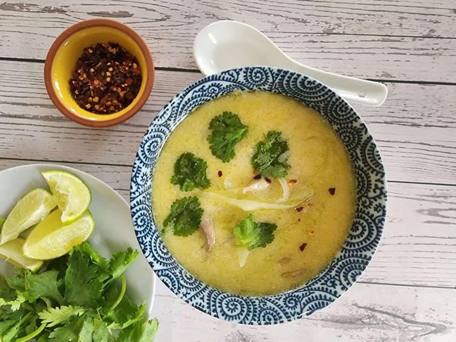

Thai coconut chicken soup

Description
Tom Kha Gai is a Thai chicken coconut soup aromatic of lemongrass, lime leaves, and galangal, gives you a refreshing aftertaste with a creamy taste from coconut.
Ingredients for Thai Basil Chicken
- Boneless skinless chicken thighs (chicken breast is okay to use, but the methods need to be modified as per the notes in the recipe card)
- Chicken broth or stock, unsalted, preferably homemade
- Coconut milk
- Lemongrass
- Makrut lime leaves (aka kaffir lime leaves)
- Thai chilies
- Oyster mushrooms or another Asian mushroom
- Fish sauce
- Palm sugar (or light brown sugar)
- Cilantro or green onions for garnish
- Fresh lime juice
Instructions
- Bring chicken stock and salt to a boil, add the chicken.
- Simmer the chicken for 15 minutes or until fork tender.
- Add coconut milk.
- Add the herbs and simmer for another 5 minutes.
- Add the fish sauce and sugar and bring back to a boil.
- Add the oyster mushrooms.
- Turn off the heat, add the lime juice, then it's ready to serve with a cilantro and/or green onion garnish!
Back
Next